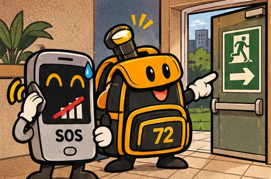
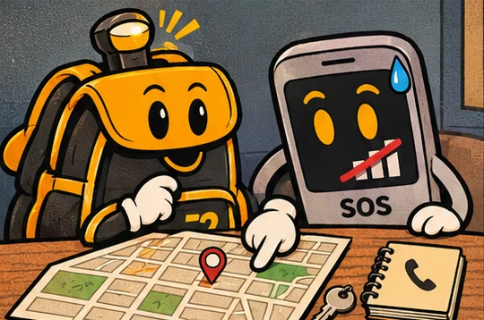
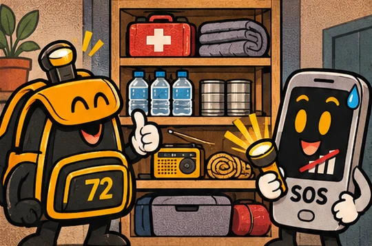
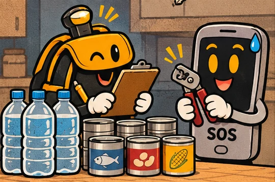
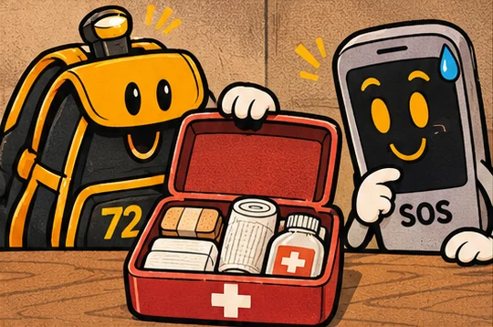
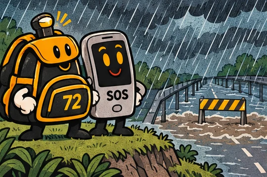
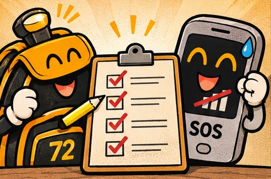

- Ponte a salvo. Identifica los riesgos inmediatos, como humo, cables caídos o agua en movimiento.
- Llama al 112 si necesitas ayuda urgente. Da tu ubicación, explica qué ha pasado y cuántas personas necesitan ayuda. Sigue las indicaciones del operador.
- Consulta los avisos de tu zona. Sigue las instrucciones de Protección Civil y de las autoridades autonómicas o municipales.
- Si se ordena evacuar, usa la ruta indicada. Lleva la mochila si está a mano y puedes cogerla sin retrasar la salida. Si se ordena el confinamiento, sigue las instrucciones del aviso.
Capítulo 1
Cómo actuar en los primeros minutos

Capítulo 2
Plan familiar de emergencia

- Acordad un punto de encuentro cerca de casa y otro fuera del barrio.
- Elegid un contacto de referencia y guardad su número en papel.
- Asignad quién ayudará a menores y personas dependientes. Preved una alternativa si esa persona está fuera.
- Dejad accesibles las copias de documentos, llaves y contactos. Preparad la correa o el transportín de las mascotas.
Capítulo 3
Reserva doméstica y mochila de evacuación

La reserva doméstica cubre varios días en casa. La mochila reúne lo esencial que puedes transportar al evacuar.
| Necesidad | En casa | En la mochila |
|---|---|---|
| Agua y comida | Agua potable y alimentos para tres días, incluidos algunos que puedas comer fríos. | Agua y comida lista para consumir en una cantidad transportable. Abrelatas si hace falta. |
| Luz e información | Linterna, radio, pilas, batería externa y cables. | Linterna compacta, radio portátil, batería externa cargada y cable. |
| Salud e higiene | Botiquín básico, medicación habitual, jabón y suministros de higiene. | Medicación habitual, ficha de salud, material básico de cura y artículos personales imprescindibles. |
| Abrigo y documentos | Mantas, ropa y copias accesibles de los documentos. | Abrigo o impermeable, copias de documentos, contactos en papel, llaves y efectivo. |
| Necesidades particulares | Suministros de bebés, ayudas técnicas y productos para mascotas. | Lo indispensable para cada persona o animal durante el traslado. |
Kit de emergencia de la Comunidad de Madrid · Mochila de CONRED
Capítulo 4
Agua potable y alimentos

Calcula la reserva de agua
Ready.gov propone unos 3,8 litros por persona y día para bebida e higiene, unos 11,4 litros por persona para tres días. Ajusta la cantidad al calor y a las necesidades del hogar y de las mascotas.
Si hay un aviso sobre el agua del grifo, comprueba qué usos restringe. Sigue las indicaciones sanitarias. Hervir el agua no la hace potable si hay contaminación química.
Organiza la despensa
Elige alimentos que ya consumas, que puedas conservar según su etiqueta y que se adapten a las necesidades dietéticas del hogar. Comprueba cómo se abren los envases. La fecha de caducidad marca un límite de seguridad. La de consumo preferente se refiere a la calidad del producto si se conserva correctamente y el envase sigue intacto.
Ready.gov · CDC sobre avisos de agua potable · AESAN sobre etiquetado
Capítulo 5
Alertas, radio y comunicaciones

- 112
- Para pedir ayuda urgente y comunicar una emergencia.
- ES-Alert
- Para recibir instrucciones de Protección Civil en móviles compatibles conectados a la red en la zona avisada.
- AEMET
- Para consultar avisos meteorológicos y seguir su evolución.
- Radio a pilas o manivela
- Para escuchar boletines y avisos que se emitan por radio si falla la luz o el acceso a internet.
- Walkie-talkie y radioafición
- Para comunicarse entre equipos dentro de su alcance y de las condiciones de uso. Las frecuencias que identifica IARU son centros de actividad de radioaficionados.
Funcionamiento de ES-Alert · Meteoalerta de AEMET · BOE, nota UN-110 sobre PMR446 · IARU Región 1
Capítulo 6
Salud y botiquín familiar

Reúne la medicación habitual, el material básico de cura y una ficha de tratamientos, alergias y necesidades de apoyo. Consulta con la farmacia o el equipo sanitario qué conviene reponer y cómo conservarlo.
Si alguien depende de un dispositivo médico eléctrico o de medicación refrigerada, acuerda de antemano con su equipo sanitario qué hacer ante un corte. Anota la autonomía del equipo y a quién llamar o adónde acudir.
Ante una urgencia, protege, avisa y socorre. Si la persona no responde o no respira normalmente, comunícalo al 112 y sigue las indicaciones del operador.
Kit de la Comunidad de Madrid · Protección Civil y Emergencias · CDC sobre energía de respaldo
Capítulo 7
Qué hacer según la emergencia

Apagón
Usa linternas. Mantén cerrados el frigorífico y el congelador. Con las puertas cerradas, los CDC estiman unas 4 horas en el frigorífico, 48 en un congelador lleno y 24 en uno medio lleno. Pasadas cuatro horas sin electricidad ni otra fuente de frío, desecha los alimentos perecederos de la nevera. Evita probarlos para comprobar su estado. Usa generadores y barbacoas solo al aire libre y lejos de puertas, ventanas y entradas de aire.
Lluvias intensas e inundaciones
Evita desplazamientos innecesarios. Aléjate de cauces y zonas bajas. Nunca cruces tramos inundados a pie ni en vehículo. Si sube el agua, gana altura por una ruta segura. Evita bajar a garajes o sótanos. Si quedas atrapado, llama al 112 e indica tu ubicación.
Incendio forestal
Si ves fuego o humo en una zona forestal, avisa al 112 desde un lugar seguro. Mantén libres los accesos de emergencia y sigue las órdenes de evacuación o confinamiento.
Calor extremo
Busca un lugar fresco, bebe agua con regularidad y reduce el esfuerzo en las horas más calurosas. Comprueba cómo están las personas mayores y dependientes. Si alguien sufre confusión marcada o pierde el conocimiento en un contexto de calor, llama al 112, empieza a enfriarlo y sigue las indicaciones del operador.
CDC sobre alimentos durante apagones · CDC sobre cortes eléctricos · Protección Civil sobre inundaciones · Autoprotección ante incendios forestales · Ministerio de Sanidad sobre calor extremo
Capítulo 8
Checklist y ficha familiar

Comprueba la preparación del hogar
Ficha familiar
Los datos se borran al cerrar o recargar la página. Imprime la ficha o anótalos en papel para guardarlos con la mochila.